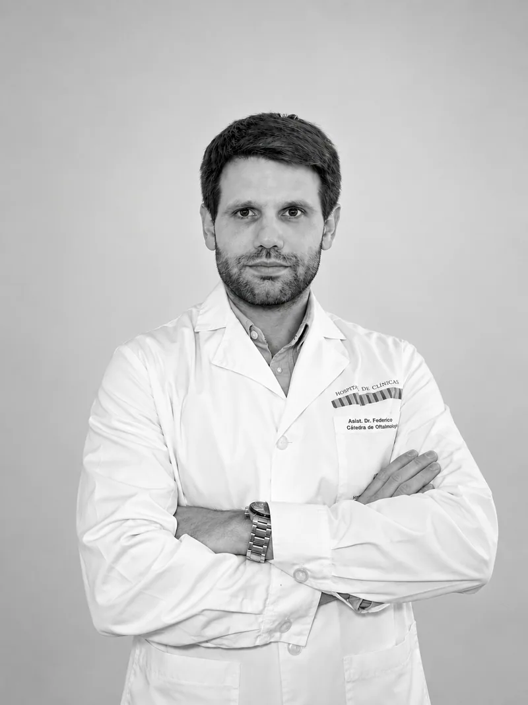
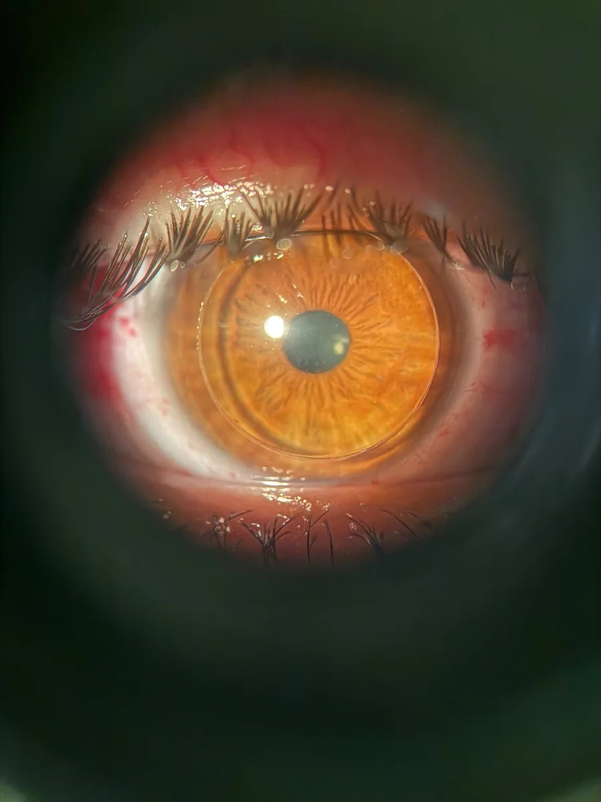
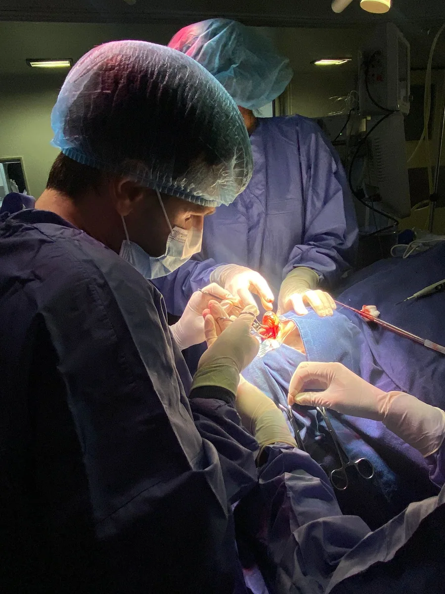

Cataract surgery
Cataract surgery with intraocular lens selection based on the clinical evaluation and each patient's visual needs.
Explore options for cataract surgeryCataract surgery · Refractive surgery
Comprehensive eye care, cataract surgery and refractive surgery. Clinical evaluation and individualized planning for each treatment.

Individualized evaluation and planning.
Clinical and surgical practice
Diagnosis and treatment of eye conditions, with a special focus on cataract surgery, refractive surgery and corneal care.
Cataract surgery with intraocular lens selection based on the clinical evaluation and each patient's visual needs.
Explore options for cataract surgeryProcedures designed to reduce dependence on glasses or contact lenses.
Explore options for refractive surgeryDiagnosis and treatment of conditions affecting the front of the eye, including pterygium and keratoconus.
Explore treatmentsVision checks and evaluation of eye symptoms and conditions.
01 · Cataract surgery
A cataract develops when the crystalline lens, the eye's natural lens, loses its transparency.
It may cause blurred vision, difficulty seeing at night, glare and frequent changes in prescription. Surgery is the only definitive treatment.
During surgery, the cloudy natural lens is replaced with an intraocular lens. Lens selection is based on ocular health, daily activities and the patient's visual requirements.
I perform cataract surgery using ultrasound, with the option of femtosecond laser assistance.
Schedule an appointment02 · Refractive surgery
Refractive surgery is designed to reduce dependence on glasses or contact lenses.
The most appropriate procedure is selected based on the prescription, the shape and thickness of the cornea, age, overall eye health and visual needs.
It makes distant objects appear blurred. Correction options depend on the prescription and the characteristics of each eye.
It may affect near vision and, in some cases, distance vision as well. The evaluation helps determine the most appropriate option.
It can cause blurred or distorted vision at different distances. Several corrective options may be considered depending on the case.
With age, the eye gradually loses its ability to focus at near. Different options may reduce dependence on glasses and are assessed according to each patient's characteristics and needs.
Refractive surgery techniques
The laser reshapes the cornea from its surface, without creating a flap.
A thin corneal flap is created and the laser reshapes the cornea underneath.
A LASIK technique in which the corneal flap is created with a femtosecond laser.
A small corneal lenticule is removed through a small incision, without creating a flap.
In selected patients, they may be an alternative to corneal refractive surgery.
03 · Anterior segment
The anterior segment is the front part of the eye. It includes structures such as the cornea, iris and crystalline lens.
I evaluate and treat corneal and anterior segment conditions, including pterygium and keratoconus.
In keratoconus, corneal cross-linking is one option used to try to slow progression. Whether it is appropriate depends on each patient's evaluation and diagnostic tests.

Technology
Diagnostic tests provide information about ocular anatomy and function. Their findings are interpreted together with the clinical examination to guide diagnosis and treatment.
Evaluates corneal shape and characteristics and provides ocular measurements used to plan different procedures.
Provide ocular measurements used to calculate the intraocular lens and guide cataract surgery planning.
Provides detailed imaging of the macula, optic nerve and anterior segment, according to the needs of each case.
Integrates the clinical evaluation, diagnostic tests and visual requirements to define the treatment strategy.
About me
I am an ophthalmologist trained at the University of the Republic in Uruguay.
My practice combines patient care, surgery, continuing education and university teaching. I began performing ophthalmic surgery during residency in 2017.
Participation as a speaker at national and international conferences and in scientific research projects.

Patient information
General information about procedures, anesthesia and recovery. Specific instructions are established during the consultation.
The choice takes into account ocular anatomy and health, daily activities and the patient's expectations. There is no single lens that is right for every case.
No. A complete evaluation is required, particularly of the cornea, the refractive error and its stability, to determine whether surgery is an appropriate option.
As a general reference, the surgery itself usually takes around 20 minutes, although this varies from case to case. Preparation and immediate recovery require additional time.
It depends on the procedure, recovery and the type of activity. In some cases, office work can be resumed the following day. Exercise, strenuous activity and driving require specific guidance.
Many cataract and refractive procedures are performed with topical anesthesia using eye drops. Depending on the procedure and the patient's needs, additional anesthesia or sedation may be required.
With anesthesia, pain is not usually felt during the procedure, although lights, touch or pressure may be perceived. The team monitors the patient's comfort throughout surgery.
Contact